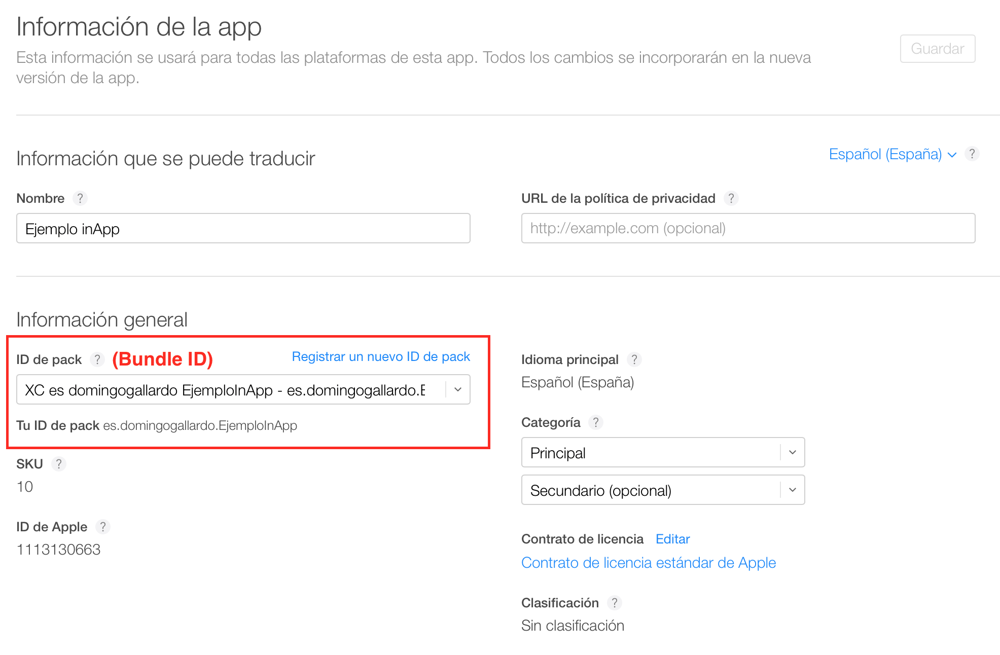
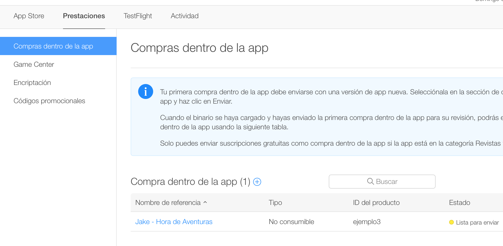
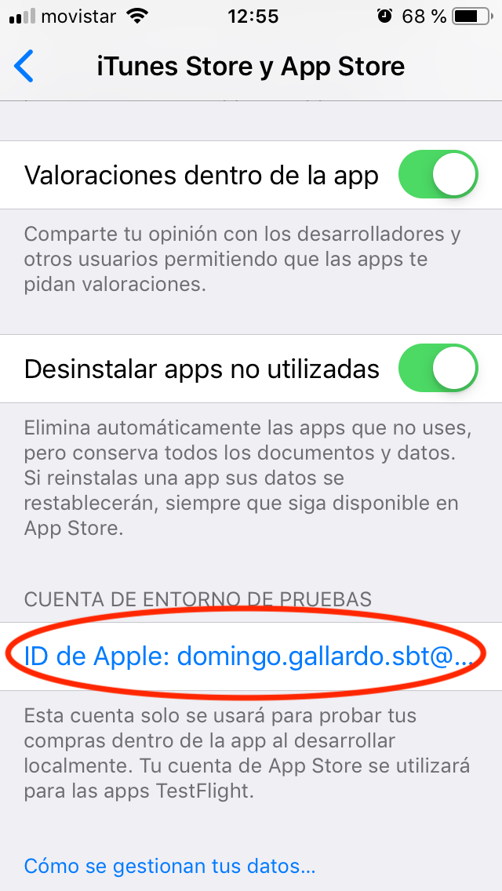
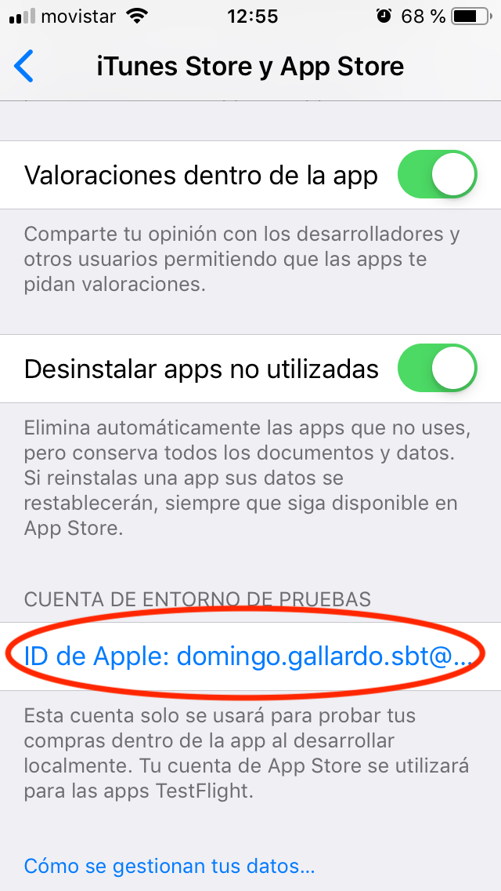
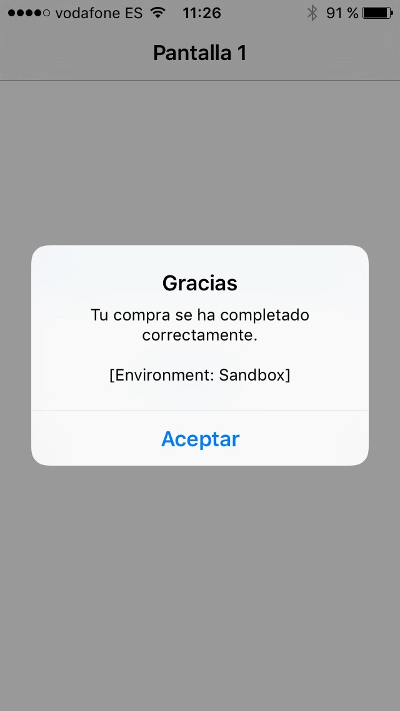

Sesión 6: Anuncios y compras In-App¶
Anuncios¶
Redes de anuncios¶
 x
x
Hasta 2016 Apple había explotado iAD, una red de anuncios propia, con su propia API, orientada específicamente a apps iOS. Durante varios años había intentado competir con las redes más populares como AdMob (Google). Al final no consiguió destacar y la red se cerró en junio de 2016.
Desde entonces los desarrolladores iOS tienen que escoger entre distintas redes existentes:
- AdMob (Google)
- Unity Ads
- Facebook Ads
- Amazon Ads
Cada red tiene su propia API, aunque son todas ellas muy similares.
Vamos a ver la red AdMob de Google, por ser la más popular. Vamos a explicar AdMob sin Firebase, para hacer más ligera la app y tener que depender del número mínimo de librerías.

API de AdMob¶
Alta en AdMob¶
Lo primero que tenemos que hacer para probar los anuncios y el API de AdMob es crear una cuenta de AdMob y registrar una aplicación.
Una vez dado de alta y creada la aplicación, tendrás un número de
registro de la aplicación del estilo ca-app-pub-6502933536055889~6323740433
Puedes encontrar tu ID de aplicación en la interfaz de AdMob.

Importar el SDK de anuncios para móviles¶
La forma más sencilla de importar el SDK a un proyecto iOS es mediante CocoaPods.
Utilizando la instalación de Ruby que viene por defecto en MacOS para instalar CocoaPods basta con hacer:
1 | $ sudo gem install cocoapods |
Supongamos que vamos a trabajar con la app ToDoList. En el directorio
raíz del proyecto debes crear el fichero Podfile, con el contenido:
1 2 3 | target 'ToDoList' do
pod 'Google-Mobile-Ads-SDK'
end
|
Después, desde línea de comando y estando en el directorio raíz del proyecto, debes ejecutar:
1 | $ pod install --repo-update |
Se descargarán las librerías necesarias y se creará un fichero
ToDoList.xcworkspace que es el que debes abrir con Xcode. Al abrir
este fichero Xcode abrirá una configuración de workspace en la que
pueden existir más de un proyecto. Es la configuración que se usa para
trabajar con CocoaPods.
Actualizar el fichero Info.plist¶
Añade una clave GADApplicationIdentifier con un valor de cadena igual
a tu ID de aplicación de AdMob al archivo Info.plist de tu
aplicación. Puedes encontrar tu ID de la aplicación en la interfaz de
AdMob.
Puedes hacerlo editando el fichero:
1 2 | <key>GADApplicationIdentifier</key> <string>ca-app-pub-6502933536055889~6323740433</string> |
O usando la interfaz de Xcode:

Inicialización del API¶
Antes de cargar anuncios, debemos inicializar el SDK de
anuncios de Google para móviles llamando al método
start(ompletionHandler:) de GADMobileAds.sharedInstance(), que
inicializa el SDK y hace una retrollamada al controlador de
finalización una vez que la inicialización se ha completado, o bien
después de un tiempo de espera de 30 segundos.
Solo es necesario hacerlo una vez, preferiblemente al iniciar la aplicación. La llamada debe realizarse lo más pronto posible.
A continuación, tienes un ejemplo de cómo llamar al método startWithCompletionHandler: en tu AppDelegate:
Ejemplo de AppDelegate.swift (fragmento)
1 2 3 4 5 6 7 8 9 10 11 12 13 | import GoogleMobileAds @UIApplicationMain class AppDelegate: UIResponder, UIApplicationDelegate { func application(_ application: UIApplication, didFinishLaunchingWithOptions launchOptions: [UIApplication.LaunchOptionsKey: Any]?) -> Bool { // Override point for customization after application launch. GADMobileAds.sharedInstance().start(completionHandler: nil) return true } } |
Selección del formato de anuncio¶
Tras importar e inicializar el SDK de anuncios para móviles, podemos descargar un anuncio. AdMob ofrece diversos formatos de anuncios, y debemos elegir uno de ellos, el que mejor se ajuste a la experiencia de los usuarios de nuesra aplicación.
Dos de los más usados son de tipo banner y de tipo interstiticial.
Banner
Los anuncios de banner son anuncios rectangulares de imagen o de texto que ocupan parte de la pantalla de una aplicación. Permanecen en pantalla mientras los usuarios interactúan con la aplicación y pueden actualizarse automáticamente después de un cierto periodo de tiempo. Si es la primera vez que utilizamos la publicidad para móviles, son un excelente punto de partida.
Existen distintos tamaños de banners, que podemos seleccionar con su identificador:
| Tamaño | Descripción | Disponibilidad | Identificador |
|---|---|---|---|
| 320x50 | Banner | Teléfonos y tablets | kGADAdSizeBanner |
| 320x100 | Banner grande | Teléfonos y tablets | kGADAdSizeLargeBanner |
| 300x250 | Rectángulo mediano | Teléfonos y tablets | kGADAdSizeMediumRectangle |
| 468x60 | Banner de tamaño completo | Tablets | kGADAdSizeFullBanner |
| 728x90 | Leaderboard | Tablets | kGADAdSizeLeaderboard |
Intersticial
Los intersticiales son anuncios que ocupan toda la pantalla y cubren la interfaz de una aplicación hasta que el usuario los cierra. El mejor momento para usarlos son las pausas naturales de una aplicación. Por ejemplo, al pasar de un nivel a otro en un juego o después de completar una tarea.
Veamos el código para implementar un anuncio de cada uno de estos tipos.
Implementación de un banner¶
Cuando probemos las aplicaciones debemos usar siempre anuncios de prueba en lugar de anuncios reales. De lo contrario, Google podría suspender nuestra cuenta de AdMob.
La forma más sencilla de cargar anuncios de prueba es mediante el ID
de bloque de anuncios de prueba que Google ha creado para banners de iOS:
ca-app-pub-3940256099942544/2934735716.
Cuando publiquemos la app sólo hay que sustituir este ID por el ID real.
Los anuncios de banner se muestran en objetos GADBannerView, por lo
que lo primero que debemos hacer para integrarlos es incluir un objeto
GADBannerView en nuestra jerarquía de vistas.
Debemos actualizar las propiedades de este objeto:
rootViewController: controlador de vistas que se utiliza para mostrar una superposición cuando se hace clic en el anuncio. Como valor, normalmente se le da el controlador que contiene elGADBannerView.adUnitID: el objeto GADBannerView debe cargar anuncios procedentes de este ID de bloque de anuncios.delegate: delegado que implementa el protocoloGADBannerViewDelegateque define las funciones en las que se reciben los eventos del ciclo de vida de los anuncios.
Tras configurar el GADBannerView y sus propiedades podemos cargar un
anuncio. Para ello, se llama al método loadRequest pasando un objeto
GADRequest.
Por ejemplo, el siguiente código crea un objeto GADBannerView de
tamaño 320x50 e inicializa las propiedades anteriores:
1 2 3 4 5 6 7 8 9 10 11 12 13 14 15 16 17 | import UIKit import GoogleMobileAds class ViewController: UIViewController, GADBannerViewDelegate { var bannerView: GADBannerView! override func viewDidLoad() { super.viewDidLoad() bannerView = GADBannerView(adSize: kGADAdSizeBanner) bannerView.adUnitID = "ca-app-pub-3940256099942544/2934735716" bannerView.rootViewController = self bannerView.load(GADRequest()) bannerView.delegate = self } ... } |
En el siguiente método addBannerViewToView(_:) se añade la vista del
anuncio, alineándose con la parte inferior del área segura de
pantalla:
1 2 3 4 5 6 7 8 9 10 11 12 13 14 15 16 17 18 19 20 | func addBannerViewToView(_ bannerView: GADBannerView) { bannerView.translatesAutoresizingMaskIntoConstraints = false view.addSubview(bannerView) view.addConstraints( [NSLayoutConstraint(item: bannerView, attribute: .bottom, relatedBy: .equal, toItem: bottomLayoutGuide, attribute: .top, multiplier: 1, constant: 0), NSLayoutConstraint(item: bannerView, attribute: .centerX, relatedBy: .equal, toItem: view, attribute: .centerX, multiplier: 1, constant: 0) ]) } |
Por último, es recomendable realizar la llamada a la función anterior
que incorpora el GADBannerView a la jerarquía de vistas después de
haber recibido un anuncio. Para ello, se usa la función del delegado
adViewDidReceiveAd:
1 2 3 4 5 | /// Tells the delegate an ad request loaded an ad. func adViewDidReceiveAd(_ bannerView: GADBannerView) { print("adViewDidReceiveAd") addBannerViewToView(bannerView) } |
Podemos implementar el resto de funciones del delegado, con sentencias
print para depurar cuando se produce cada evento:
1 2 3 4 5 6 7 8 9 10 11 12 13 14 15 16 17 18 19 20 21 22 23 24 25 26 27 | /// Tells the delegate an ad request failed. func adView(_ bannerView: GADBannerView, didFailToReceiveAdWithError error: GADRequestError) { print("adView:didFailToReceiveAdWithError: \(error.localizedDescription)") } /// Tells the delegate that a full-screen view will be presented in response /// to the user clicking on an ad. func adViewWillPresentScreen(_ bannerView: GADBannerView) { print("adViewWillPresentScreen") } /// Tells the delegate that the full-screen view will be dismissed. func adViewWillDismissScreen(_ bannerView: GADBannerView) { print("adViewWillDismissScreen") } /// Tells the delegate that the full-screen view has been dismissed. func adViewDidDismissScreen(_ bannerView: GADBannerView) { print("adViewDidDismissScreen") } /// Tells the delegate that a user click will open another app (such as /// the App Store), backgrounding the current app. func adViewWillLeaveApplication(_ bannerView: GADBannerView) { print("adViewWillLeaveApplication") } |
Implementación de un interstitial¶
Los anuncios intersticiales los solicitan y muestran los objetos
GADInterstitial.
Debemos crear una instancia y asignar el ID de su bloque de anuncios.
Podemos cargar anuncios de prueba de tipo Interstitial usando el ID
ca-app-pub-3940256099942544/4411468910.
Por ejemplo, aquí se muestra cómo crear un GADInterstitial en el
método viewDidLoad de un UIViewController. Hacemos también que el
interstitial lance una petición para cargar una anuncio, y definimos
como delegado el view controller. Para ello el view controller
debe cumplir el protocolo GADInterstitialDelegate.
1 2 3 4 5 6 7 8 9 10 11 12 13 14 15 16 | import UIKit import GoogleMobileAds class ViewController: UIViewController, GADInterstitialDelegate { var interstitial: GADInterstitial! override func viewDidLoad() { super.viewDidLoad() // Do any additional setup after loading the view. interstitial = GADInterstitial(adUnitID: "ca-app-pub-3940256099942544/4411468910") interstitial.load(GADRequest()) interstitial.delegate = self } ... } |
GADInterstitial es un objeto de un solo uso que, al cargarse, muestra
un anuncio intersticial. Para que una aplicación muestre varios
anuncios intersticiales, es necesario crear un GADInterstitial para
cada uno de ellos (lo veremos más adelante).
Para mostrar un intersticial, podemos verificar la propiedad isReady en
GADInterstitial para asegurarnos de que ha terminado de cargarse y,
después, debemos llamar a presentFromRootViewController pasándole el
view controller actual como view controller raíz:
1 2 3 4 5 6 7 | ... if interstitial.isReady { interstitial.present(fromRootViewController: self) } else { print("El anuncio no está disponible") } } |
Al igual que hacíamos en el banner podemos realizar esta llamada en
la función del delegado interstitialDidReceiveAd:
1 2 3 4 5 | /// Tells the delegate an ad request succeeded. func interstitialDidReceiveAd(_ ad: GADInterstitial) { print("interstitialDidReceiveAd") interstitial.present(fromRootViewController: self) } |
El resto de funciones del delegado son las siguientes:
1 2 3 4 5 6 7 8 9 10 11 12 13 14 15 16 17 18 19 20 21 22 23 24 25 | /// Tells the delegate an ad request failed. func interstitial(_ ad: GADInterstitial, didFailToReceiveAdWithError error: GADRequestError) { print("interstitial:didFailToReceiveAdWithError: \(error.localizedDescription)") } /// Tells the delegate that an interstitial will be presented. func interstitialWillPresentScreen(_ ad: GADInterstitial) { print("interstitialWillPresentScreen") } /// Tells the delegate the interstitial is to be animated off the screen. func interstitialWillDismissScreen(_ ad: GADInterstitial) { print("interstitialWillDismissScreen") } /// Tells the delegate the interstitial had been animated off the screen. func interstitialDidDismissScreen(_ ad: GADInterstitial) { print("interstitialDidDismissScreen") } /// Tells the delegate that a user click will open another app /// (such as the App Store), backgrounding the current app. func interstitialWillLeaveApplication(_ ad: GADInterstitial) { print("interstitialWillLeaveApplication") } |
Tal y como hemos comentado el GADInterstitial es un objeto de un
solo uso. Eso significa que una vez que se muestra un intersticial,
hasBeenUsed devuelve el valor true y el intersticial no se puede usar
para cargar otro anuncio.
Para solicitar otro, deberemos crear un nuevo objeto
GADInterstitial. Si intentamos reutilizar un objeto intersticial,
aparecerá el mensaje "Request Error: Will not send request because
interstitial object has been used"
El mejor lugar para asignar otro intersticial es en el método
interstitialDidDismissScreen del delegado GADInterstitialDelegate,
para que el siguiente intersticial comience a cargarse tan pronto como
se cierre el anterior.
Podemos refactorizar la creación del interstiticial en una función
aparte, y llamar a esa función desde viewDidLoad y desde
interstitialDidDismissScreen:
1 2 3 4 5 6 7 8 9 10 11 12 13 14 15 | override func viewDidLoad() { super.viewDidLoad() interstitial = createAndLoadInterstitial() } func createAndLoadInterstitial() -> GADInterstitial { var interstitial = GADInterstitial(adUnitID: "ca-app-pub-3940256099942544/4411468910") interstitial.delegate = self interstitial.load(GADRequest()) return interstitial } func interstitialDidDismissScreen(_ ad: GADInterstitial) { interstitial = createAndLoadInterstitial() } |
Demo: Aplicación de prueba¶
Puedes descargarte una aplicación de prueba en la que se muestra el funcionamiento básico de AdMob.


Se debe ejecutar la app en un dispositivo real, ya que AdMob no
funciona en el simulador. También debes darte de alta en AdMob, registrar
una aplicación e incluir el número de registro en el fichero Info.plist.
Compras In-App¶
¿Qué es una compra In-App?¶
Permite vender directamente una funcionalidad dentro de una app.
Los datos de la compra (precio, identificador) se definen en iTunes Connect.
Se implementa con el API StoreKit:
- StoreKit pregunta al usuario si confirma la transacción a través del acceso seguro del App Store.
- La app recibe la confirmación de la compra y debe desbloquear dinámicamente la funcionalidad.
- La app debe guardar la información de que el usuario ha comprado esa nueva funcionalidad, aunque el usuario siempre puede recuperar la compra.

Ejemplos de uso¶
Las compras In-App son una de las formas de monetización más usadas en la actualidad
Por ejemplo:
- Podemos dar una versión básica gratuita y vender funcionalidades adicionales premium.
- Podemos permitir la suscripción a contenidos periódicos que se pueden descargar
- Ofertas de niveles adicionales en juegos
- Compras de mercancías virtuales en juegos on-line
Tipos de compras In-App - Compras¶
- No-consumibles
- Ítems que permanecen disponibles de forma indefinida en todos los dispositivos del usuario.
- Ejemplos: libros, niveles de un juego, funcionalidades premium de un app.
- Consumibles
- Ítems que se consumen durante el tipo de ejecución del app.
- Ejemplos: minutos de llamadas de voz sobre IP, o servicios de un sólo uso como transcripción de voz.
Tipos de compras In-App - Suscripciones¶
- Suscripciones auto-renovables
- Como los no-consumibles, las suscripciones permanecen disponibles en todos los dispositivos. Tienen una fecha de expiración, en la que el sistema renueva automáticamente la compra.
- Suscripciones no-renovables
- Suscripciones en las que no se entrega contenido periódico.
- Ejemplos: acceso a una base de datos de fotos históricas.
- Suele acompañarse de una cuenta de usuario en un servidor.
- La duración y la expiración de la suscripción se realizan desde la app (y el servidor).
Requisitos para activar las In-App¶
Las compras In-App sólo pueden probarse y activarse con una cuenta de desarrollador de pago.
Es necesario acceso a iTunes Connect para configurar las compras.
No es posible hacerlo con el equipo de la universidad.
Haremos una demo con una cuenta de desarrollador.
Contratos¶
¡Cuidado!: Para poder probar las compras In-App hay que tener todos los contratos en regla.

Servicios a activar en la app¶

Bundle identifier y App Id¶


Configuración In-App desde iTunes Connect¶
Datos del app¶

Pantalla para añadir nuevos In-Apps¶

Seleccionar el tipo de In-App¶

Características del In-App¶
- Nombre de referencia: aparece en la ventana de compra
- ID del producto: identificador del In-App para reconocerlo en el app
- Precio
- Datos para la revisión de Apple
Características del In-App¶


Usuarios de prueba¶
Para probar las compras In-App debemos crear usuarios de prueba de sandbox en iTunes Connect.
En el dispositivo de prueba hay que iniciar la sesión en el App Store con ese usuario de prueba.

 

Demo¶
Vamos a ver un ejemplo de aplicación que contiene una pantalla sorpresa cuyo acceso se activa con una compra In-App.
Está disponible en este enlace





Código para implementar las compras In-App¶
El proceso de compra en un vistazo¶
Debemos implementar los protocolos
SKProductsRequestDelegate
y
SKPaymentTransactionObserver.

Clase auxiliar InApp¶
Creamos un protocolo InAppDelegate y una clase InApp donde
gestionaremos la interacción con StoreKit:
1 2 3 4 5 6 7 8 9 10 11 12 13 14 15 16 17 18 19 20 21 22 23 24 25 26 27 28 29 30 31 32 33 34 35 36 37 38 39 40 41 42 43 44 45 46 47 48 49 50 51 52 53 54 55 56 57 58 59 60 61 62 63 64 65 66 67 68 69 70 71 | protocol InAppDelegate { func compraRecibida() } class InApp: NSObject, SKProductsRequestDelegate, SKPaymentTransactionObserver { var productDetailsList: [SKProduct] = [] var productIdentiferList: [String] = [] var delegate: InAppDelegate? override init() { super.init() SKPaymentQueue.defaultQueue().addTransactionObserver(self) // Cargamos la lista de productos productIdentiferList.append("ejemplo3") let request = SKProductsRequest.init(productIdentifiers: Set(productIdentiferList)) request.delegate = self request.start() } // Método del delegado al que se llama cuando se han recibido los productos func productsRequest(request: SKProductsRequest, didReceiveResponse response: SKProductsResponse) { print("Hemos recibido \(response.products.count) productos") productDetailsList = response.products for invalidProductId in response.invalidProductIdentifiers { print("Producto invalido id: \(invalidProductId)") } } // Método para lanzar la petición de compra al usuario func lanzarPago() { if (self.productDetailsList.count > 0 && SKPaymentQueue.canMakePayments()) { let producto = productDetailsList[0] let pago = SKPayment(product: producto) SKPaymentQueue.defaultQueue().addPayment(pago) print("Comprando...") } else { print("No existen productos") } } // Método del delegado al que se llama cuando el usuario compra el InApp func paymentQueue(queue: SKPaymentQueue, updatedTransactions transactions: [SKPaymentTransaction]) { for transaction in transactions { switch transaction.transactionState { case .Purchased: print("Purchased") delegate?.compraRecibida() SKPaymentQueue.defaultQueue() .finishTransaction(transaction) case .Failed: print("Failed") print("Error de transacción: \(transaction.error?.localizedDescription)") SKPaymentQueue.defaultQueue() .finishTransaction(transaction) case .Restored: print("Restored") delegate?.compraRecibida() SKPaymentQueue.defaultQueue() .finishTransaction(transaction) default: print("Otro") } } } |
Clase ViewController¶
En la clase ViewController adoptamos nuestro protocolo
InAppDelegate y definimos su método compraRecibida() al que se va
a llamar cuando se haya recibido y validado la compra.
1 2 3 4 5 6 7 8 9 10 11 12 13 14 15 16 17 18 19 20 | class ViewController: UIViewController, InAppDelegate { @IBOutlet weak var botonSorpresa: UIButton! let inApp = InApp() // Instancia de la clase auxiliar InApp override func viewDidLoad() { // Nos hacemos delegados de InApp inApp.delegate = self // Escondemos el botón que da acceso a la pantalla sorpresa botonSorpresa.hidden = true // Comprobamos si el usuario ha comprado antes el inApp // Funciona si el usuario está identificado if NSUserDefaults.standardUserDefaults().boolForKey("inAppComprado") { botonSorpresa.hidden = false } else { botonSorpresa.hidden = true } super.viewDidLoad() } |
La acción asociada al botón de compra llama al método lanzarPago de
la instancia de nuestra clase InApp:
1 2 3 4 5 | // Acción asociada al botón de compra @IBAction func hazCompra(sender: UIButton) { print("Click botón de compra") inApp.lanzarPago() } |
En el método compraRecibida() (del protocolo) activamos un botón que
da acceso a la pantalla sorpresa.
1 2 3 4 | // Implementación del método del protocolo InAppDelegate func compraRecibida() { botonSorpresa.hidden = false } |
Acción para mostrar la pantalla sorpresa:
1 2 3 4 | @IBAction func sorpresa(sender: UIButton){ performSegueWithIdentifier("Sorpresa", sender: view) } } |
Práctica¶
En la práctica deberás añadir anuncios a la app ToDoList.
- Debes añadir un banner en la parte inferior de la lista de tareas.
- El anuncio del banner debe cambiar cada vez que se vuelve a esta lista desde la pantalla con el resumen de tareas completadas.
- Una de cada cinco veces que se vuelva a esta lista de tareas debe mostrarse un anuncio intersticial.
- En la pantalla del resumen de tareas completadas debes poner un botón que abra una alerta para quitar los anuncios. Una vez que el usuario lo confirme dejarán de mostrarse anuncios en la app (simulando una compra InApp).
Referencias¶
- Google AdMob SDK para iOS
- Recursos sobre compras In-App
- App Store Connect - In-App purchase
- In-App Purchase Programming Guide
- Receipt Validation Programming Guide
- StoreKit Framework Reference
- Technical Note: Adding In-App Purchase to your iOS and OS X Applications
- Technical Note: In-App Purchase Best Practices